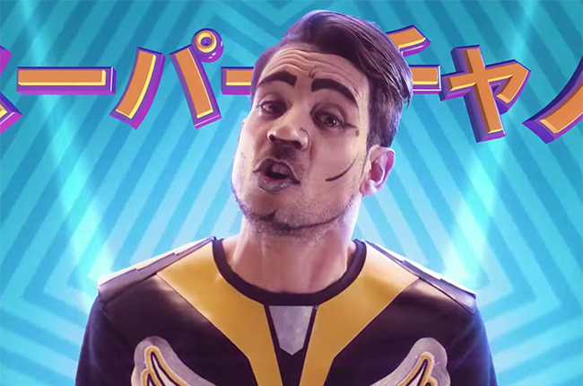

Santiago Moreno Charpentier, conocido artísticamente como Chano, es un cantante, compositor, pianista y guitarrista argentino.
Alcanzó la prominencia como el frontman de la banda pop rock Tan Biónica,
durante la primera mitad de la década de 2010
CHANO
Carnavalintro
Hice un viaje al norte argentino y me nutrí del carnavalito, que es bastante combinable con el bombo en negras del pop y sumado a esas guitarritas norteñas, imaginé un sonido nuevo que combina con el pop. Pensé una estética diferente, por eso el video está inspirado en el gamer japonés... una mezcla medio rara pero todo lo nuevo es bueno.

imagen del video de CHANO⚡ Carnavalintro
Tema Mas escuchado de CHANO:
Tan Bionica
Ciudad Magica
Ciudad mágica de Buenos Aires, capital mundial del desencuentro.
Cada vez que te recorro, te encuentro maravillosa, por fuera y por dentro.
Imagen del video de Tan Bionica "Ciudad Magica"
Tema mas esuchado de Tan Bionica:
Chano en el "luna Park"
Chano Charpentier anunció su regreso a los escenarios luego del show que brindó el 22 de marzo de este año en Ituzaingó.
Está confirmado que el cantante estará tocando en el mítico Luna Park el próximo jueves 3 de noviembre.